November 2024
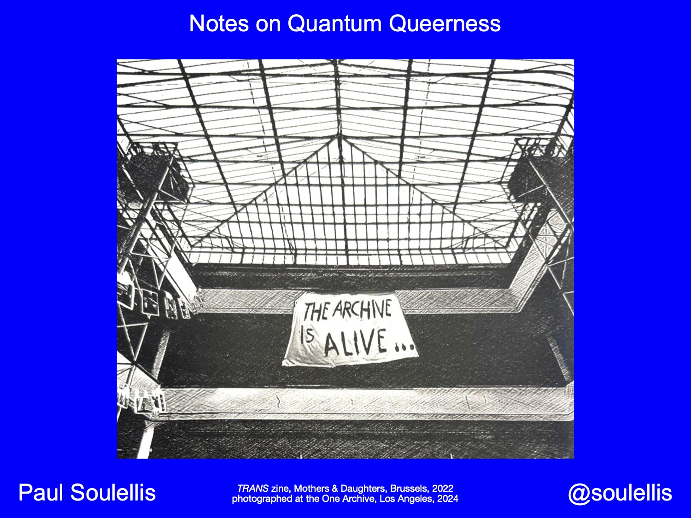
Delivered 15 November 2024 at Page Not Found, The Hague, Netherlands
Scene 1, Unconscious in the street
I’ve been thinking about queer ancestors both alive and dead. I’m searching for ways to be in communication with queer ancestors, to convene queer kinship across time and space. Queer timelines are always incomplete; our history is time interrupted, timelines erased, evidence neglected. Looking for queer ancestry means confronting silence, disease, necropolitics, failure, voids; this is part of what it means to work with history outside of heteronormative traditions of inheritance and accumulation. Having lived through the violence and ruptures of queer life in the 1980s and 90s, I’m looking to repair some of the wounds that I carry with me.
Generated image, 2022
Recently, I was in an accident. I tripped while walking downhill, which caused me to fly headfirst into a stone wall. I broke 12 bones. For an unknown amount of time I lay on the sidewalk, unconscious in public, until I was found by someone who called for help. My body was brought closer to the end of my own timeline, if not quite all the way. I experienced a new, heightened awareness of the boundaries between bodies and timelines, and began to think about what it might mean to become an ancestor myself.
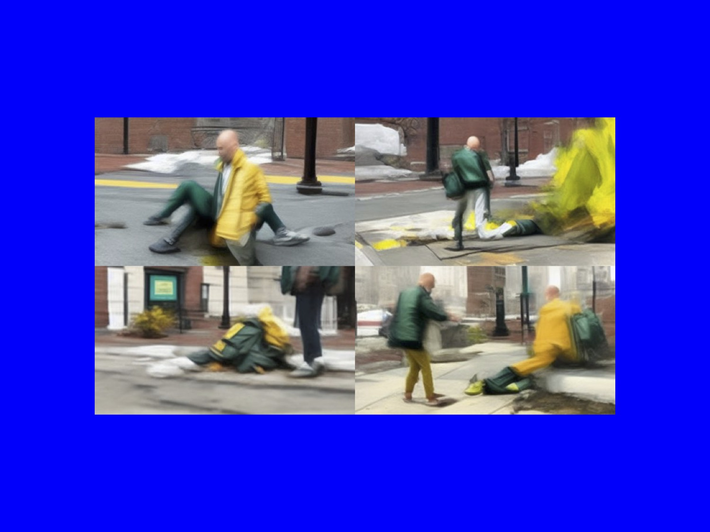
Generated images, 2022
From my hospital bed, I struggled to make sense of those moments of the accident that were outside my memory, and began feeding details of the event into a popular text-to-image generator to try and “reconstruct” the fall. I wanted to become an eyewitness to myself: an outside observer who could rewind time and play back the event, again and again.
Generated images, 2022
I eventually generated thousands of images, almost without thinking, assembling an archive. I hoped they might reveal an opening in my memory, somehow locating my absent body. I thought, foolishly perhaps, that they might show me what had really happened.
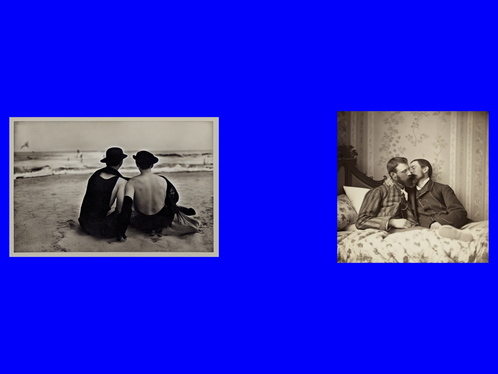
Generated image, 2023
The sensations of potential and repair proved quite addictive, and I soon started looking for other bodies, not just my own. I messaged the Midjourney bot on Discord, writing prompts for queer bodies, trans bodies, scenes of life in queer spaces.
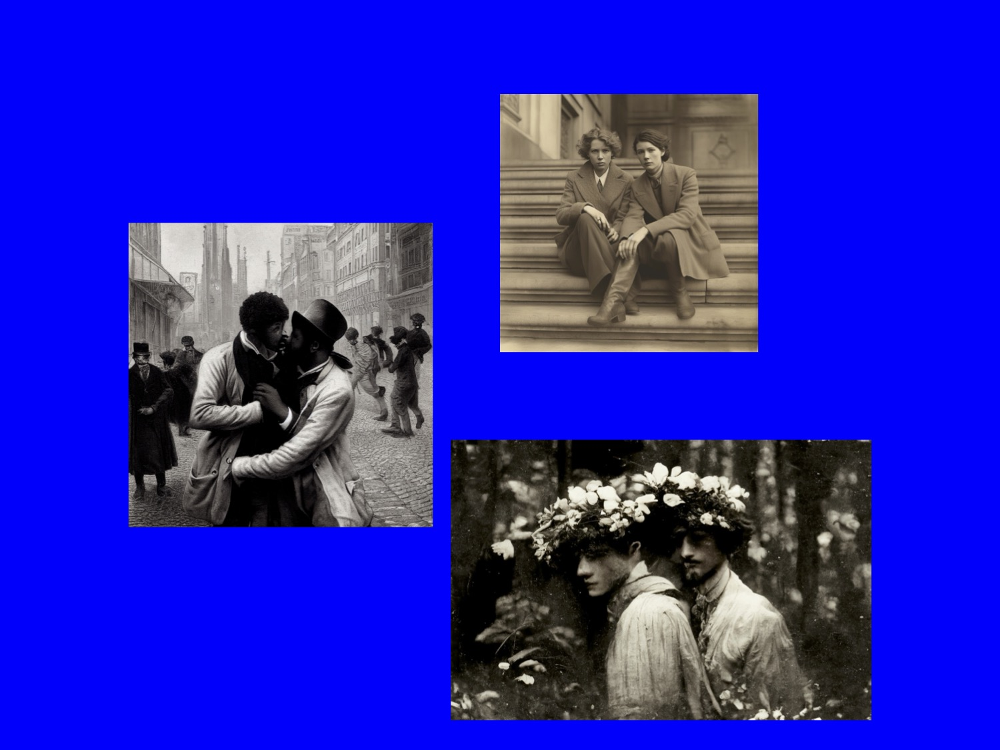
Generated image, 2023
I asked for historical images of men in love, trans women, gay bodies embracing—queer images from times when social and technological constraints would have made such photographs difficult or impossible.
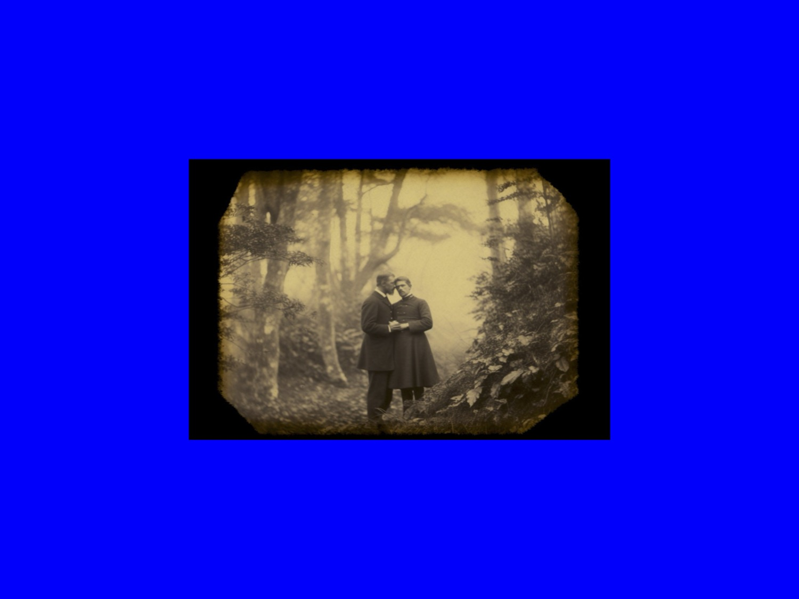
Generated image, 2022
The prompts felt like things I needed to see; but the images felt like things I’d seen before. Their bodies, styles, poses, the interactions of these characters and the spaces they inhabited—they reminded me of real archival artifacts.
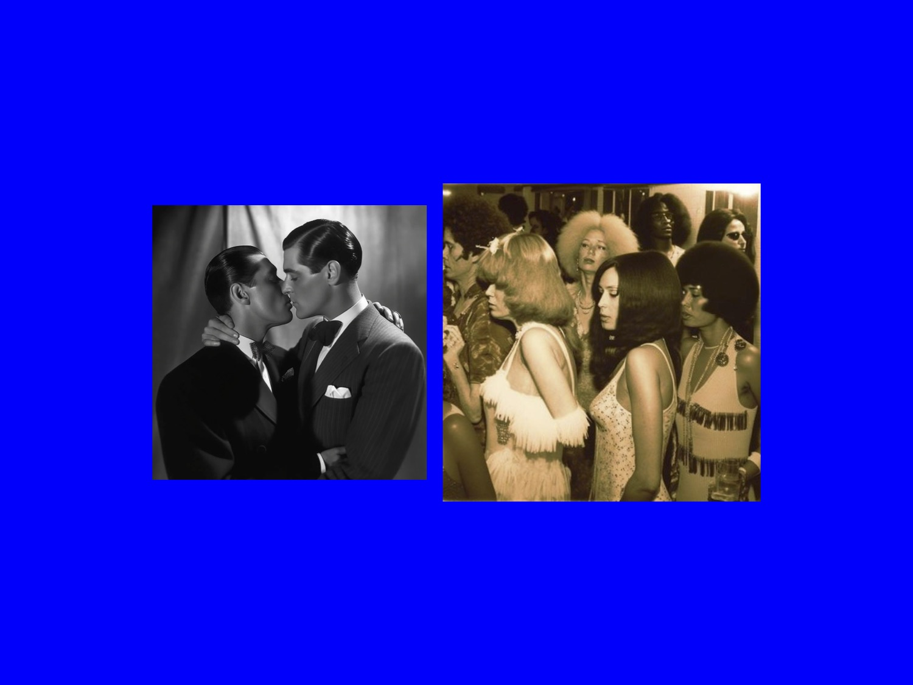
Generated images, 2023
They also prompted recurring critical questions: why does it only generate white bodies, unless I ask it not to? Why does everyone look so similar?
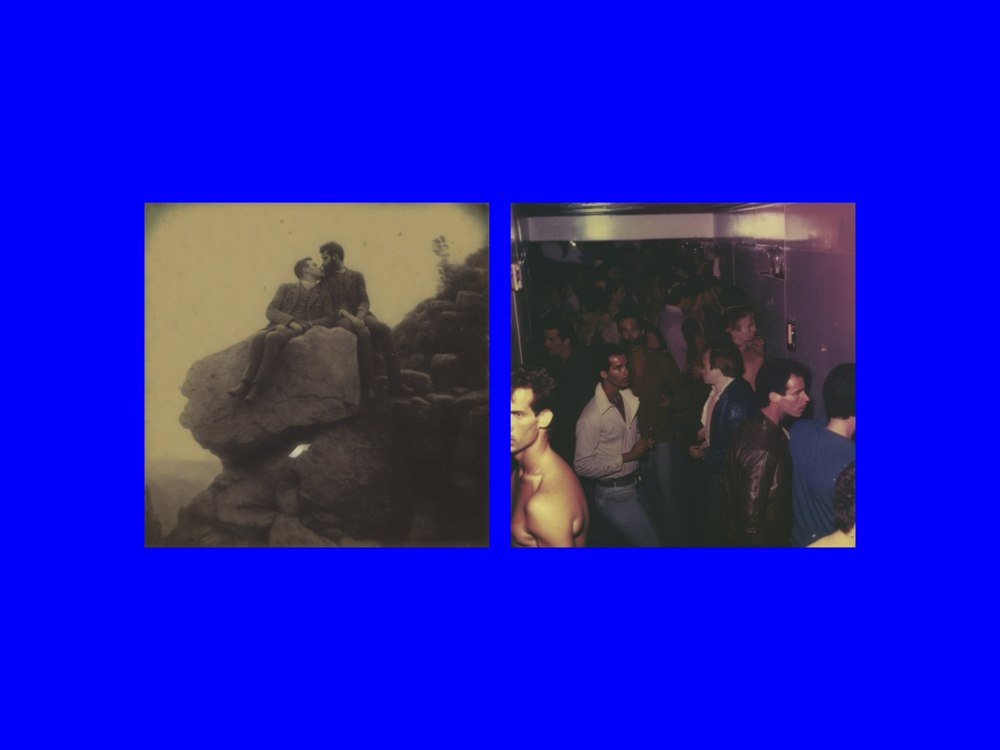
Generated images, 2023
Why do these scenes, never before seen, feel so familiar? Despite their occasional deformities and bodily hallucinations, they contained a weird capacity for stirring emotion. I was drawn to their seemingly bottomless potential for visualizing an absent queer history; as the images emerged from my prompts, I felt increasingly entangled with these fictional figures and narratives. Was I writing these stories, or were they emerging from somewhere beyond?
Generated images, 2023
Hito Steyerl calls these kinds of AI images produced without a camera “mean images,” she says, they form an approximation. You train the diffusion model with a vast photographic dataset and it returns averages, new images emerging from random noise. She says that these renderings represent “averaged versions of mass online booty.”
Generated images, 2022
It’s a very strange sensation to go looking for your own body like this, looking for yourself as an approximation emerging from a random database of bodily forms. I struggled with whether to print or publish these images, and debated their value and ethics with colleagues, but still I couldn’t stop generating.
Generated images, 2023
I questioned whether these images were truly reparative, or simply mirroring back my own desires as an older gay white man who wanted so badly to make contact with gay life before and during the HIV/AIDS crisis (another moment when I was also “unconscious in the street”). They seemed to show the story of queer life persisting and surviving through time, but when I looked into them deeply there was no one looking back. I had confused longing (wanting to belong) with a scopophilic desire to manufacture my ancestry, as if I could simply conjure it all into being.
Scene 2, The real possibility of entanglement
Found image, 2022
Later, while I was renovating my house in Providence, Rhode Island, a Polaroid photograph fell out of the ceiling. Until that moment it had somehow been in the floorboards of the house, between the first floor and the basement. The image depicted a young Black woman sitting at a banquette with six cocktail glasses on the table in front of her. She’s smiling and looks relaxed, arms open and outstretched to her sides. She appears alone except for a single mysterious bare leg stretched across the bottom of the frame. I was able to date the photostock to the 1970s. Where did it come from? Was it lost? Hidden? Had she lived here? What role had I played in exposing this picture? This old house, built in 1924, was an image generator, and I was the prompt.
Found artifact and image, 2022
More artifacts fell out from behind the fireplace when we removed the mantle. All together, the ad hoc collection appeared to be evidence of Black American family life in the 1970s, 80s, and 90s. I don’t have access to what’s happening in these images, but they remind me that my occupancy of this house comes with a responsibility to tend an ongoing social fabric of stories and lives, and that these past (and future) connections are sometimes sensed, if not seen.
Found artifacts, 2022
My entanglement with the tender acts surrounding this Polaroid crossed the boundaries of time and space: the house had functioned like an archive, preserving evidence within its walls. I thought about the power of this one precarious image, sitting for decades, in relation to the thousands of images I had generated with AI, practically overnight.
Found artifacts, 2022
My archive only referred to itself; meanwhile, neglected evidence of real life is to be found everywhere, hidden away in storage spaces both legitimate and makeshift. To be open to this kind of ephemera—what might even be considered trash—requires care and labor, and the real possibility of entanglement. Archives are at once both time machines and dead ends, places where neglected evidence survives, but out of view, “unconscious in the archive.”
Found images and artifacts, 2022
This is my work now: turning my attention to the archive, both official ones and other kinds too, the bad, wayward archives outside of institutions, illegitimate collections where I can light up new circuits. I’m looking for porous openings where I can become entangled with these precarious moments of generosity and tenderness, which might connect us to future ways of living.
Scene 3, Queer material in queer hands
L. S. Alexander Gumby, 1950
While searching in an archive recently, I encountered one of those openings: the story of L.S. Alexander Gumby, who opened Gumby’s Book Studio in 1926 at 2144 Fifth Avenue in Harlem, New York. Gumby was an openly gay Black man who documented African-American history during the Harlem Renaissance,
Gumby Scrapbook pages
by saving newspaper clippings, ticket stubs, artwork, event programs, letters, poetry, and other ephemera. He preserved his collection in carefully constructed scrapbooks, which I see as a kind of wayward publishing practice.

Images in Gumby scrapbook, location of Gumby Book Studio at 2144 Fifth Avenue, Harlem, New York
Gumby would gather friends and strangers at the studio for salons, parties, and performances where he would share and discuss his work. There, in that queer space, Gumby’s Book Studio was a living archive, cared for by its creator but kept alive through the relationships that formed and gathered around the artifacts.
Gumby Scrapbook pages
Some of that material can now be viewed online at Columbia University’s Library, where Gumby left his collection of over 300 scrapbooks in 1950. Networks of community memory continue to emerge from this work, now that it’s on the network. Looking at some of the pages, I found one plainly titled “Your History,” the words cut from a headline, above a few snippets about Black inventors and performers;
Images of Maurice Hunter in Gumby Scrapbook
another page contains three striking photographs of Maurice Hunter, a Harlem-based performer and artists’ model.
Images in Gumby Scrapbook pages
Even though we can see these images of Gumby’s scrapbooks online, I’m trying to imagine what it was like in 1926, inside Gumby’s book studio, where people gathered together with his work, and so I’m thinking about “queer materials in queer hands.” That’s how Ben Power describes his approach to archival justice—“telling the truth about people who are alive today and about people who are already dead.”
Tycho Horan at the Sexual Minorities Archive, Holyoke, MA, 2022
Ben is a trans man who lives inside his archive—the Sexual Minorities Archive—in this pink house. That’s my colleague Tycho, who came with me when I visited recently.
Photograph of Ben Power 1988, Ben Power 2022
We’re in Holyoke, MA, and this is Ben on the right, and a photograph of Ben from 1988 on the left, hanging in his house. We saw a lot of the queer media that he’s been collecting for 50 years, things that would otherwise be discarded, including matchbooks, postcards, buttons, cassette tapes, posters, and pulp fiction novels. His house contains over 20,000 items.
Ben Power, 2022
There’s even a portion of a graffiti-covered wall from a queer bookstore that was demolished—the wall was headed to the trash, before it was saved by Ben, who now stores it in his garage.
Sexual Minorities Archive, 2022
In finding materials to bring back to the house, he says that “the collection is then almost an extension of my body and where my body goes … also, it’s a matter of control and being in my hands, which are transgender hands.”

Sexual Minorities Archive, 2022
As he describes, the only safe place for such a collection is to take care of it in spaces where we live and work; “I’m queer, the curator, [and] you’re queer, the visitor—that’s the perfect environment for growth because we’re asking our own questions about our own lives. Nobody’s telling us how to look at our lives. We’re looking at it from queer angles … and to me it’s very political. Queer materials in queer hands is the strategy that, through education, helps get our people closer to equality.”
Sexual Minorities Archive, 2022
So I’ve been thinking about the remarkable, porous spaces of Gumby and Ben Power, and their hands. I’m thinking about bodies in the archive, about living in the archive, about handling queer material with queer hands, as I myself travel and visit these physical archives and spaces to become entangled.
Scene 4, Community retrieve of truth
Project One, photo by Lynn Adler, early 1970s
It’s 1973, just twelve years after Gumby’s death, four years after Stonewall, and one year before Ben Power began collecting. Project One was a warehouse community where people lived and worked together on six floors, located in an abandoned candy factory—it was one of over 300 communes in San Francisco at the time.
Community Memory terminals in Berkeley, CA (Leopold’s Record Shop, left and Whole Earth Access, right), 1970s
Pamela Hardt-English, a computer scientist, acquired a decommissioned mainframe computer and installed it at Project One, and I mention her by name, because she’s frequently left out of this story. This computer was connected to a single terminal across the Bay in Berkeley, inside a student-run record store. It was located next to a conventional bulletin board. Later, more terminals were added at other locations. This was the very first public computerized bulletin board service, where anyone could sit, type, and post a message. The first public virtual community. They called it Community Memory. This wasn’t quite yet the internet—it was a closed network—but it did foreshadow a lot of the functionality and many of the behaviors we associate with the early web.
Community Memory printout, 1974, photographed at Computer History Museum archive, Fremont, CA, 2024
People really used it. They posted about ride shares, concert tickets, selling stuff, looking for rooms, looking for advice, poetry, personals, manifestos, community organizing. There was even the world’s very first troll known as Benway.

Community Memory printout, 1974, photographed at Computer History Museum archive, Fremont, CA, 2024
Each individual post was tagged with keywords, enabling connections when the database was searched.
Resource One newsletter, 1974, photographed at Computer History Museum archive, Fremont, CA, 2024
Promotional material at the time stated that Community Memory was “community mindfulness, not-forgetfulness… it is communal retrieve of truth, communal disclosure, that which is (left) open, by us, to us.”
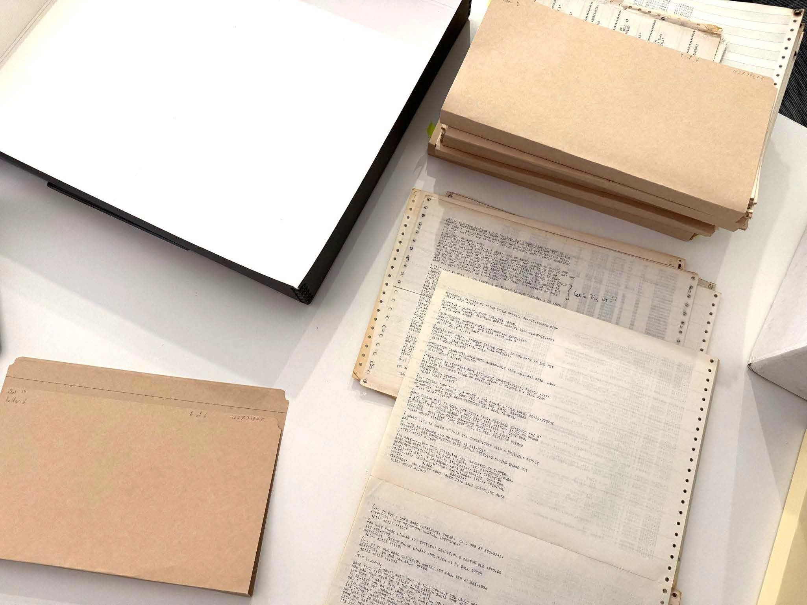
Community Memory printouts, 1974, photographed at Computer History Museum archive, Fremont, CA, 2024
Each week, all of the posts were printed out, forming an incredible screen-to-print archive in real time. This is why I traveled to Silicon Valley, California, to visit the Computer History Museum in person, which is the archival home to this printout. Even though it’s in an archive devoted to digital history, this is a collection that needs to be seen and touched. I’m there to handle these printouts with my own hands. I took all of these photographs. Reading through thousands of messages, I find a few posts that reference queer material.
Community Memory printout, 1974, photographed at Computer History Museum archive, Fremont, CA, 2024
One is for Lavender U, “to provide gay women and men (and others exploring gay feelings) the opportunity to share knowledge, skills, and experiences in a supportive educational/social environment.”
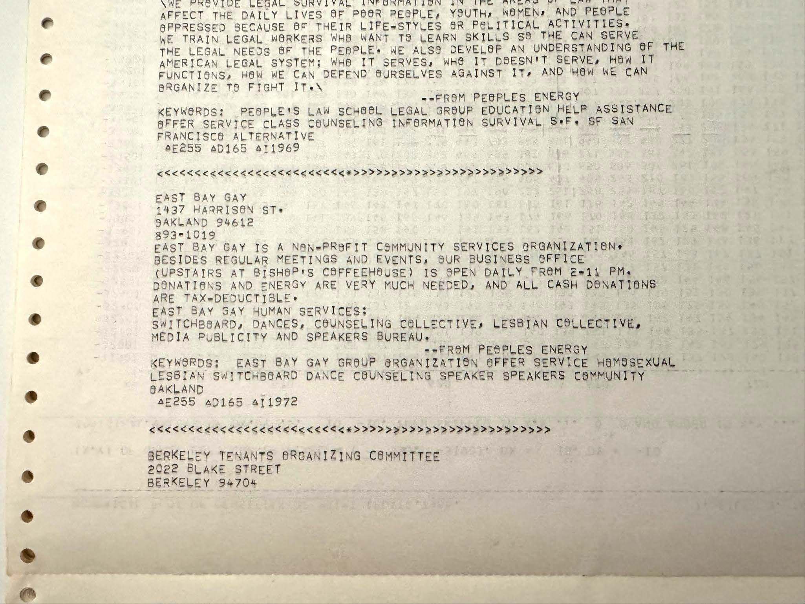
Community Memory printout, 1974, photographed at Computer History Museum archive, Fremont, CA, 2024
Another post is for East Bay Gay, “a non-profit community services organization,” and there’s one for Amazon Quarterly, a very early lesbian publication. This is 1973, only a few years after Stonewall. It’s possible that these are the first moments of queer community organizing and publishing on a digital platform, ever. Who typed these? Who were these queer ancestors who sat at the keyboard and did these queer acts of typing?
Scene 5, Archives offer the possibility of survival
Printout of The Backroom title screen, photographed at ONE Archives, Los Angeles, CA, 2024, and early magazine advertisements for The Backroom
It’s 1987, and a PhD student at Columbia named David Charnow created an early online message board for people with HIV/AIDS called SURVIVORS. He learned that he was HIV positive just as he started this message board, which was a section of The Backroom, a very early gay digital bulletin board service.
Charnow documented his struggles in his own posts, which he signed with the handle =UPPER WESTSIDER=, always typed like this. Charnow ran SURVIVORS as a queer survival network until July 1990, when he passed away from AIDS-related illnesses.
SURVIVORS printout, 1989, photographed at ONE Archives, Los Angeles, CA, 2024
One month before he died, he made a complete printout of all of the posts. That 1,000-page printout, now referred to as the SURVIVORS Printout, is stored today at the One Archives in Los Angeles. The story of the SURVIVORS printout was beautifully documented and analyzed in a text by Kat Brewster and Bo Ruberg in 2020, which is where I first learned about it.
SURVIVORS printout, 1989, photographed at ONE Archives, Los Angeles, CA, 2024
Recently, I visited the One Archives, and I spent several hours with the Survivors Printout, examining and reading through as many printed pages as I could. Afterwards, I left the archive and just kind of broke down in the car. The emotional weight of the experience was extreme; it was a lot to process. The content of the SURVIVORS Printout is deeply moving and powerful in ways that you would expect, containing so many interconnected stories about illness, dying, and loss.
SURVIVORS printout storage folders, photographed at ONE Archives, Los Angeles, CA, 2024
But I think I was responding to something else as well. It has to do with the ephemerality of this artifact itself (the loose papers, the folders, the box), its minimal presence, its barely-there materiality. All of this is in stark contrast to the enormity of the world contained in the box. I’m hit with a sharp awareness of time that I sense as a loss in my own body. It’s about being in proximity with this box, and it has to do with my own being and my own survival.

SURVIVORS printout storage box, photographed at ONE Archives, Los Angeles, CA, 2024
It’s a realization that each of the posts contained in the SURVIVORS printout is a direct conduit to someone, all of these lives engaged and entangled with each other over a digital network that no longer exists. And that the authors’ actions at the keyboard—making these posts—is all that remains. This is what persists: the box with a thousand sheets of paper, documenting their queer acts of typing, which I can access only because of Charnow’s decision to print, and my eventual travel to this archive. I feel connected to him and his decision, entangled through this fragile trajectory of papers ending up in this box at the ONE Archives.
SURVIVORS printout, 1989, photographed at ONE Archives, Los Angeles, CA, 2024
Within the hybrid digital/analog condition of the SURVIVORS printout as a media archeology, I find something else—a more emotionally fraught hybrid condition of being and existence, of being both there and not there. Handling the evidence with my own hands is a full, connected experience that I feel deeply in my body.
SURVIVORS printout, 1989, photographed at ONE Archives, Los Angeles, CA, 2024
It positions me directly in front of major gaps in the timeline: the loss of lives and histories stopped short, neglected, forgotten, of course, but also—the loss of my own experience of that crisis. I was alive throughout the HIV/AIDS crisis but “unconscious in the street,” frightened, alone, and turning away from it as part of my own survival. I’m reckoning with that now.
Marika Cifor, “Presence, Absence, and Victoria’s Hair,” 2015
In “Presence, Absence, and Victoria’s Hair” (2015), Marika Cifor writes that “archives offer the possibility of survival.” Cifor is describing an encounter they had with a single human hair in an archive during their own research. The hair likely belonged to Victoria Schneider, a trans woman, sex worker, and activist. Cifor finds the single hair on a lipstick in the collection. Cifor says this: that such an encounter “closes some of the distance between objects and the lives they represent, bringing together bodies to build identities, stories, and futures for themselves, while maintaining space for possibility and keeping subjects in time differently.” Cifor writes that the stakes of such an embrace are high,
Marika Cifor, “Presence, Absence, and Victoria’s Hair,” 2015, citing Roger Hallas, “Queer AIDS Media and the Question of the Archive,” 2010
and that the central question for archives is “how the past that emerges from them ‘can potentially produce a revelatory historical consciousness of the present’ that is so desperately needed.”
Scene 6, A surplus of meaning and language
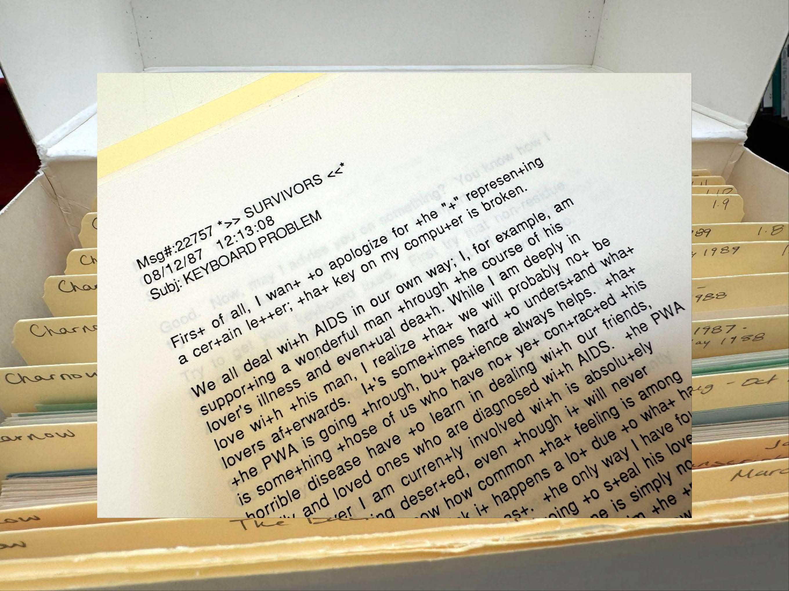
SURVIVORS printout, 1989, photographed at ONE Archives, Los Angeles, CA, 2024
In all of its power and fragility, the folders, box, and one thousand loose sheets of paper that make up the SURVIVORS printout warp queer time. I want to keep thinking and speaking and writing about the SURVIVORS printout.
SURVIVORS printout, 1989, photographed at ONE Archives, Los Angeles, CA, 2024
Specifically, there is a page that stands out from all of the others, for a reason that goes beyond the obvious emotional content. This is message #22757, dated the 12th of August, 1987 at 12:13, Subject: KEYBOARD PROBLEM. Its author isn’t identified, nor is their gender, age, or any other traits; they wrote the post to share their experience of caring for two people: one who was ill with HIV/AIDS, and that person’s partner and primary caregiver. What’s striking though is that the author begins the post with an apology about their keyboard.

SURVIVORS printout, 1989, photographed at ONE Archives, Los Angeles, CA, 2024
“Firs+ of all, I wan+ +o apologize for +he “+” represen+ing a cer+ain le++er; +ha+ key on my compu+er is broken.”
What an incredible example of queer typography!
SURVIVORS printout, 1989, photographed at ONE Archives, Los Angeles, CA, 2024
Why queer? I see it this way for a few reasons that go beyond the obvious context at hand. But that context should be noted: I found this page within the largest LGBTQIA+ archive in the world, and the post was written in 1987, during the height of the HIV/AIDS crisis. The original author’s brief message provides insight into the urgent care and support that was happening as communities were struggling with illness, negligence, and death. Without question, it’s a queer story and the printout enables us to locate this author in the otherwise sparse and confusing timeline(s) of queer history.
SURVIVORS printout, 1989, photographed at ONE Archives, Los Angeles, CA, 2024
But it’s the author’s opening line that brings this page of writing into another realm, as they apologize for the “keyboard problem” identified in the subject line. The letter “T” on their keyboard doesn’t work, so they’ve decided to substitute “+” for “T” in order to get their message across, and this is remarkable. Faced with a malfunction that creates a constraint, the “+” is a simple typographic hack. They decided to use one keystroke as a substitute for another (broken) one; more accurately, it’s a code, or a cipher, that functions as a workaround. The reader can easily decode the message and adapt their reading because it only involves one letter and the forms are similar: the “+” looks like a lowercase “T.”
In fact, the author could have used any other letter or symbol, and the message would still be readable. They could have even left out all of the Ts entirely.
At what point does language break apart? Any one of these solutions, including the “+” substitution, introduces friction and s l o w s down the reading experience. The slower experience asks more from the reader—more consideration, more time, more patience
and this is echoed in the content of the message itself, which is about dealing “wi+h AIDS in our own way,” about the terror of facing death alone, and about the value of standing by for unconditional support. It’s also about being in community, and sharing these experiences, as a form of survival.
John Cage, Empty Words, Wesleyan University Press, 1974–75
John Cage experimented with the removal and eventual breakdown (liberation?) of language in 1974 with Empty Words, a book and spoken performance that gradually eliminated sentences, phrases, words, and syllables from Thoreau’s journals, until the language was, he said, “demilitarized.” Could we consider the “+” substitution in the KEYBOARD PROBLEM post “demilitarized” in some way? Maybe queer acts of typing that move away from perfect legibility towards a more poetic place are less regulated, opening up “other legibilities”. On the other hand, this post, this language, is armed, it’s loaded, it’s ready. It contains a surplus of meaning and extra power.
The decision by the author to substitute a plus/positive sign for the broken T takes this simple code into another dimension because this is also the symbol that’s added to the letters “HIV” in order to designate someone’s seropositive status (HIV positive). The “+” indicates that the HIV virus is detectable in the body (a presence, a surplus). There’s also this: that the HIV virus attaches itself to T cells and causes them to die, and the decreasing T cell count is what eventually leads to an autoimmune crisis in the body (AIDS), and death.
In the KEYBOARD PROBLEM post, it’s the author’s letter T that is broken, replaced by the positive sign. The author of the post, faced with a keyboard crisis, made the creative decision to hack their tool with a modified alphabet, which introduces friction to the reading experience. The result is compromised, not perfect, but absolutely readable. The post contains 104 positive signs that read like a filter has been overlaid on top of the language; the text has something more, it takes on a new “texture,” and it’s still legible. The author negotiates between the tool, the language, and the forum—to produce a new kind of slower typing/writing. I see this as a queer act of liberated typing/writing, which requires a new kind of slower, queer read—for the reader, there’s no avoiding it.
Is the queer read imposed here a broken one? Is the transformed text an actual problem for the reader? I would argue that by queerly typing the text in this way, the author has instead created a surplus. There is an abundance of love and care that is expressed in the KEYBOARD PROBLEM post on multiple levels, and this abundance is clearly legible. As a reader, I understand their modification in order to get this message across as a surplus of meaning and language, not a problem or a lack.
And speaking of typography—the actual font is irrelevant! It’s all about the typing. The hack can transfer to any computer user on the network, and can be output by any printer. The abundance is transferable, flexible, and easily adaptable. Was the author thinking about T cells and seropositive status when they made the substitution? Were they being clever? I doubt it, but that’s also irrelevant. The surplus is there now, as it was then, when this message was read on all of the screens of the readers of the SURVIVORS forum, and when it was printed out. I’m grateful to have found this remarkable example.
Roger Hallas, "Queer AIDS Media and the Question of the Archive," 2010
And I’m even more grateful for these ancestors: the anonymous author of KEYBOARD PROBLEM, and David Charnow, who printed the SURVIVORS posts in 1990, just one month before his death. Their decisions warp queer time and enable us to become entangled in the archive, in their lives across time and space, and to reposition our own bodies in relation to queer histories and futures. There was no way for them to know what would happen next, in their expressions of care, in their simple acts of typing and printing, in the total uncertainty of that moment. “The question of the archive is thus in the end not whether it succeeds in preserving the past from oblivion but how the past that eventually emerges from it can potentially produce a revelatory historical consciousness of our present.”
Scene 7, A spectrum of legibilities
Fag Rag, Fall-Winter 1973, photographed at the ONE Archives, Los Angeles, CA, 2024
I’m back in Los Angeles, to continue my research at the One Archives. I’m working on a new book about queer typography, so I’m going through an endless number of artifacts, over a period of two weeks, and trying to form a thesis for the book. There in the archive I’m able to hold an infinite number of queer histories in my hands,
Gay Flames Pamphlet No. 7, 3rd World Gay Revolution, 1970, and Gay Flames Issue 12, 1971, photographed at the ONE Archives, Los Angeles, CA, 2024
all possible histories, as they’ve been collected there over many decades, first privately, and then within a state university. The luxury of this cannot be understated—the privilege of this access. I took thousands of photographs, searching. What was I looking for?
Fag Rag, Fall 1978, photographed at the ONE Archives, Los Angeles, CA, 2024
Not a particular aesthetic, or style, or typeface. What I started to find was a set of logics. These are some of those ideas, triggered by my close look at the Survivors Printout and the Keyboard Problem. I’m searching for evidence, I’m searching for ideas about doing liberated language and giving it shape. All possible histories. It feels like I’m facing all of it, all of queer history; of course, I’m not. But as I imagine what future typographies might be, and how they might emerge from these logics, I wonder if they could also be about potentiality, possibility, and plurality. Here’s the start of a counterlogics for queer typographies:
context—the politics of liberated language;
hacking—modified alphabets and meaningful codes;
a spectrum of other legibilities;
care for the reader;
accessibility;
adaptability;
action—new acts of typing, writing, and reading;
surplus—an abundance of texture, friction, meaning, and language
gendertrash #4, Spring 1995, photographed at the ONE Archives, Los Angeles, CA, 2024
In the archive, I request magazines, newsletters, papers, journals, zines, stickers, t-shirts, buttons, protest signs, and other artifacts. What starts to emerge, as a priority, is this idea: a spectrum of other legibilities.
Pages from Gay Sunshine newspaper, 1970–71, photographed at the ONE Archives, Los Angeles, CA, 2024
There is no single, definitive strategy for a liberated typography; rather, there is a plurality of queer typographies. They operate under different conditions of visibility and understanding. The need to be seen and heard, which can change from moment to moment, from movement to movement. It’s not always about shouting. It’s not always about hiding. Multiple legibilities along a spectrum are proposed for locating queer typographies.
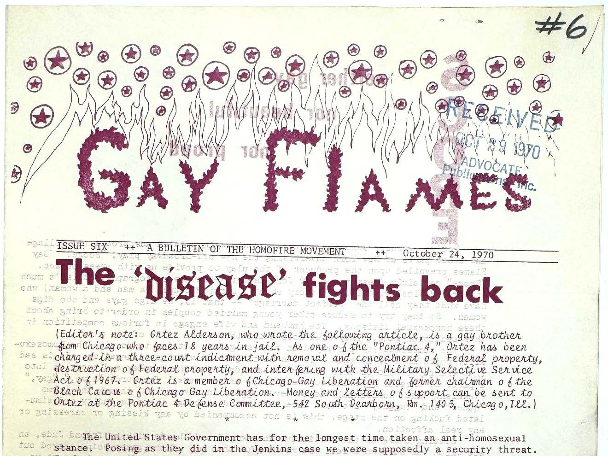
Gay Flames Issue 6, October 1970, photographed at the ONE Archives, Los Angeles, CA, 2024
I’m sketching out a thesis for a more non-linear approach to typography. Not as a timeline through progress, not through the smoothness of design perfection, not through the pursuit of universal standards for typography and legibility, and the belief that there exists perfect legibility, and such a thing as an ideal reading experience for all.
Gay Post #2, undated (early 1970s), photographed at the ONE Archives, Los Angeles, CA, 2024
No, instead, what I propose is this: by focusing on queer and intersectional movements, in the past and in the present, we see what doing liberated language looks and feels like. This is a counterlogics of legibility, where queer design and typography emerge from the queer acts that produce liberated language. This is language produced within, around, under, and alongside those most burdened by the matrix of domination (white supremacy, heteropatriarchy, capitalism, settler colonialism).
The Ladder, March and April 1958, photographed at the ONE Archives, Los Angeles, CA, 2024
This counterlogics is about negotiating legibility. Sometimes it’s about hiding in plain sight.
J.D.’s, late 1980s, photographed at the ONE Archives, Los Angeles, CA, 2024
Other times, it’s about language that plays with legibility, revealing to some but opaque to others.
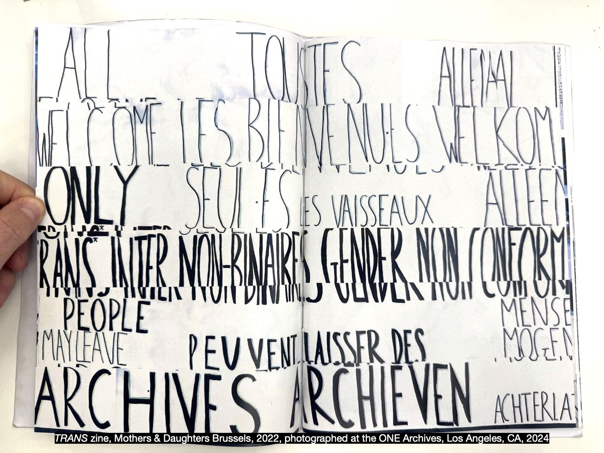
TRANS zine, Mothers & Daughters Brussels, 2022, photographed at the ONE Archives, Los Angeles, CA, 2024
Multiple meanings and understandings for different publics and counterpublics.
Left: LA Gay Liberation Front stickers, early 1970s, Right: ACT UP Los Angeles flier, late 1980s, photographed at the ONE Archives, Los Angeles, CA, 2024
And of course, at another end of this spectrum of legibilities is maximum visibility. Amplification, when it makes sense to “broadcast” and prioritize the exposure of information.
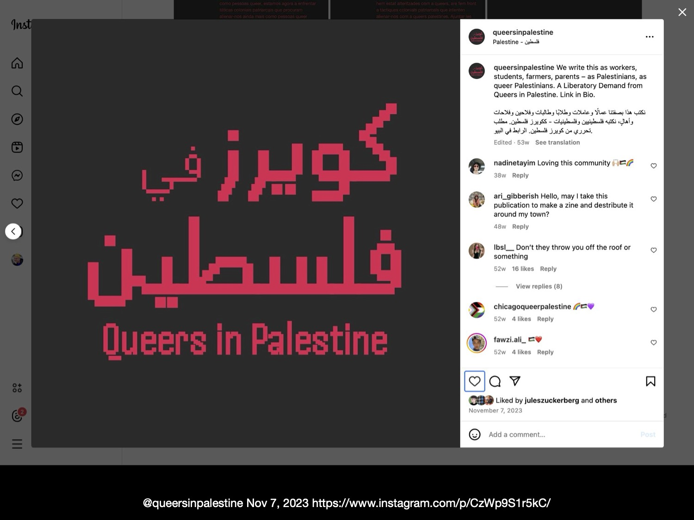
@queersinpalestine Nov 7, 2023 https://www.instagram.com/p/CzWp9S1r5kC/
Understanding how these logics of visibility work in today’s struggles for liberation is essential,
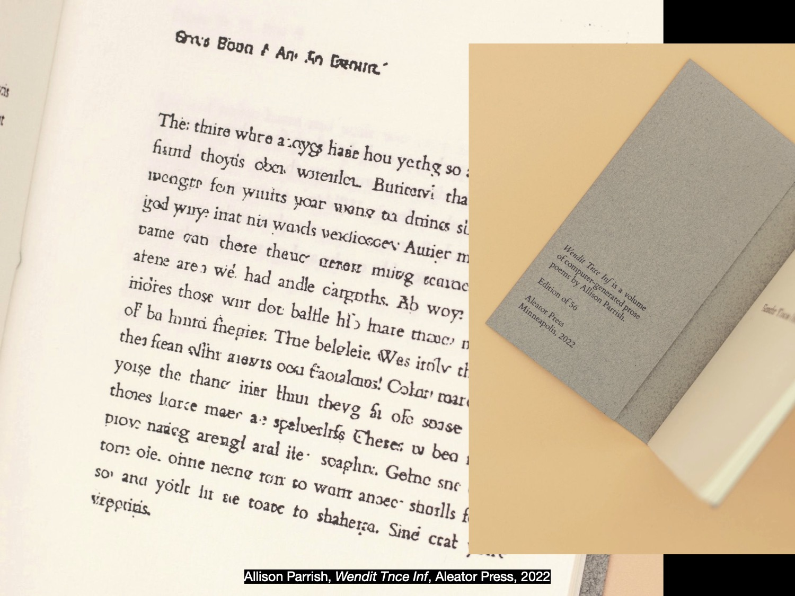
Allison Parrish, Wendit Tnce Inf, Aleator Press, 2022
and I’m also researching purely speculative typography, in this case, letterforms by Allison Parrish, collaborating with a Generative Adversarial Network that she trained, to produce an entire book of poetry,
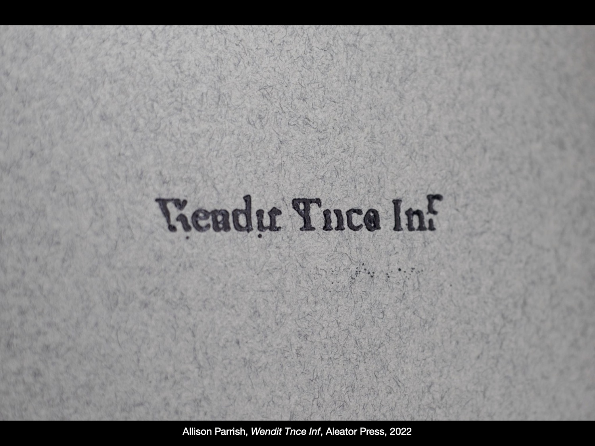
Allison Parrish, Wendit Tnce Inf, Aleator Press, 2022
and from all of these counterlogics, I hope to conclude the book with this idea: that the future of typography is liberated, plural, and queer.
Scene 8, Survival by sharing
First ever photograph of entangled photons, University of Glasgow, 2019
In quantum physics, entanglement is what happens when one particle can’t be described independently of the state of another. The correlation between them persists through time and space, even across large distances. Einstein famously described this as “spooky action at a distance.” It can only be explained by the smallest units of energy behaving weirdly, according to rules that seem to go against the most commonly understood paradigms of time, space, and gravity. I’ve always suspected that queer kinship might also operate like this, through heightened forms of entanglement.
Diagram: Karen Barad, "Troubling Time/s and Ecologies of Nothingness," 2017
We exist, after all, in opposition to straight, linear time. Queer time stops, reverses, and starts again; it skips and repeats; it resists the patterns and routines of conventional chronological structures. Here’s my wish: that within queer time’s failure to plod along linearly, predictably and logically, we might discover shared moments that cohere across large temporal distances. In those shared moments, bodies—and queer kinship—might be found.
Elizabeth Freeman, Time Binds, Queer Temporalities, Queer Histories, 2010
Elizabeth Freeman writes that the wish for physical contact across time “demands and enacts formal strategies and political stances worth taking seriously… [and] this longing produces modes of both belonging and ‘being long,’ or persisting over time.” It’s this “being long” and persistence over time that I’m after here: a longing for the circuitry that lights up large expanses of the timeline where queer family convenes, always both here and there, past (passed) and present.
In a quantum approach to queer time, whether it be through photography, or typography, or media archeology, my own unconscious body in the street and the queers typing at the Community Memory terminal and the woman in the Polaroid that fell from my ceiling and Ben Power and Gumby’s Book Studio and scrapbooks and UPPER WESTSIDER and the anonymous author of KEYBOARD PROBLEM all exist together in the same collage, as I’ve assembled them here. It’s 2124 and we’re both alive and dead, in combined moments of generous and tender “survival by sharing” spanning many decades. Unable to actually observe these queer acts of care in lived time, I can convene them now, and then, in queer time, as survival networks that persist because of our own interference, open and searching in the archive, extending our own queer hands and bodies across time and space (“being long”). This entanglement in the archive might produce a revelation, of sorts. This entanglement itself is a kind of care and healing, making space for survival as we move towards future worlds.